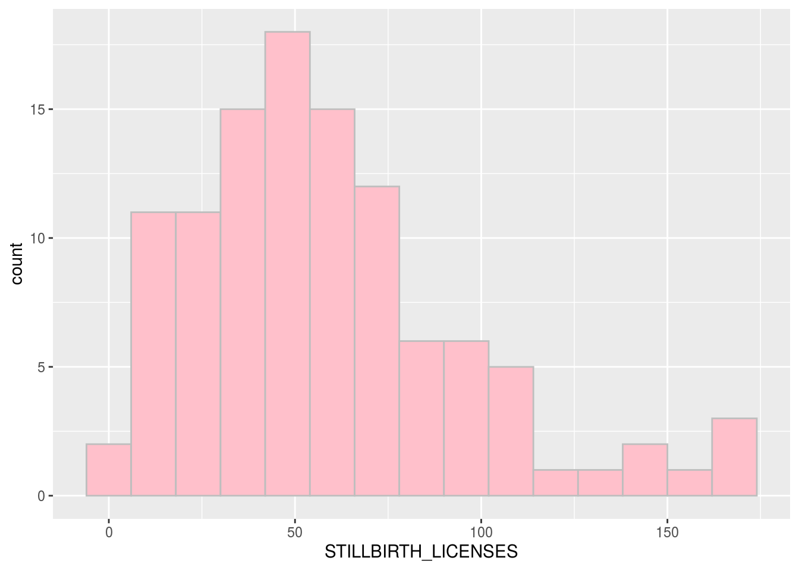
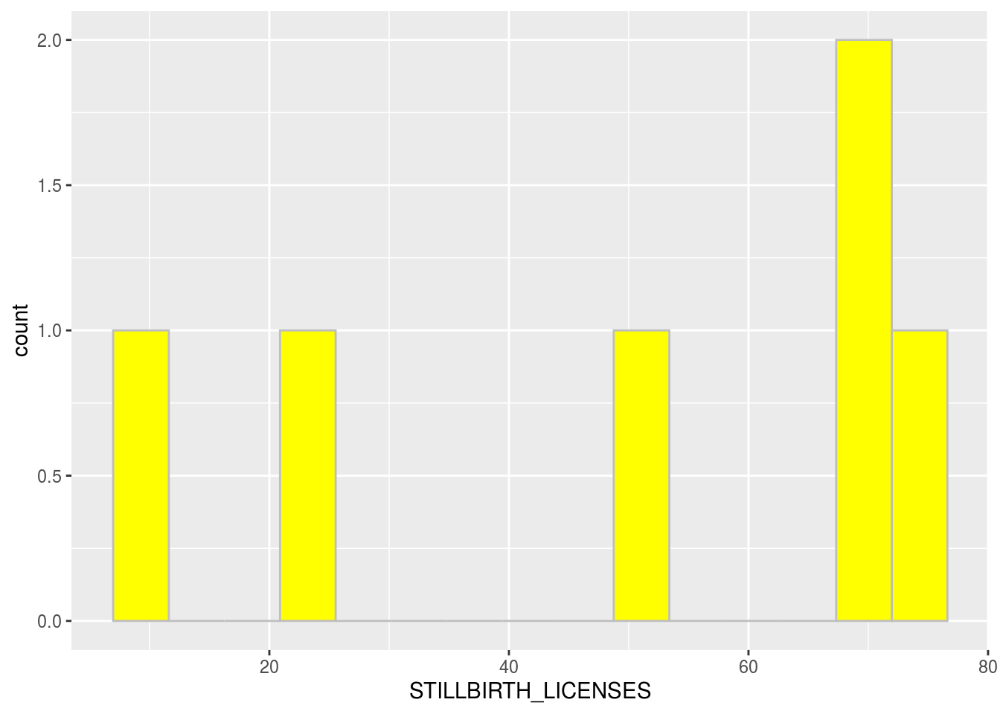

1) Abstraction
This assignment mainly researched stillbirth monthly in Etobicoke from 2011 to 2020. It used two histograms to compare general tendency and situation in 2020, which find there was a rise in the mode of stillbirth monthly from 50 to 70. In addition, the largest value of fetus which died in the uterus in 2020 decreased compared with total trend.
2) Introduction
Many babies are died after 20 weeks pregnancy and before they come up in this world, we call this phenomenon is stillbirth. The data of this project illustrate total trend of stillbirth from Registry Services Tracking System. Following graphs and descriptions will tell people more information about theme.
3) Data Introduction
The background of dataset is about stillbirth which was recorded by Registry Services at the Etobicoke Civic Centre from 2011 to 2020. Here are two main variables. One is SILLBIRTH_LICENSES (belongs to integer) that describes number of stillbirths registered in the month. The other one is TIME_PERIOD (belongs to character) which illustrates month death registered. Id and CIVIC_CENTRE are less important, they represent unique row identifier for open data base and code of civic centre respectively. I use Wickham et al. (2019) and City Clerk’s Office(2020).
install.packages("opendatatoronto")
## Installing package into '/home/rstudio-user/R/x86_64-pc-linux-gnu-library/4.0'
## (as 'lib' is unspecified)
install.packages("dplyr")
## Installing package into '/home/rstudio-user/R/x86_64-pc-linux-gnu-library/4.0'
## (as 'lib' is unspecified)
library(opendatatoronto)
library(dplyr)
##
## Attaching package: 'dplyr'
## The following objects are masked from 'package:stats':
##
## filter, lag
## The following objects are masked from 'package:base':
##
## intersect, setdiff, setequal, unionpackage <- show_package("93b2ff8c-989b-49cd-8597-5286c95a287e")
package
## # A tibble: 1 x 10
## title id topics civic_issues excerpt dataset_category num_resources formats
## <chr> <chr> <chr> <chr> <chr> <chr> <int> <chr>
## 1 Stil… 93b2… <NA> <NA> <NA> <NA> 1 <NA>
## # … with 2 more variables: refresh_rate <chr>, last_refreshed <date>
resources <- list_package_resources("93b2ff8c-989b-49cd-8597-5286c95a287e")
datastore_resources <- filter(resources, tolower(format) %in% c('csv', 'geojson'))
data <- filter(datastore_resources, row_number()==1) %>% get_resource()
data
## # A tibble: 109 x 4
## `_id` CIVIC_CENTRE STILLBIRTH_LICENSES TIME_PERIOD
## <int> <chr> <int> <chr>
## 1 1740 ET 24 2011-01
## 2 1741 ET 12 2011-02
## 3 1742 ET 17 2011-03
## 4 1743 ET 38 2011-04
## 5 1744 ET 20 2011-05
## 6 1745 ET 2 2011-06
## 7 1746 ET 116 2011-08
## 8 1747 ET 144 2011-09
## 9 1748 ET 65 2011-10
## 10 1749 ET 107 2011-11
## # … with 99 more rowsinstall.packages("tidyverse")
## Installing package into '/home/rstudio-user/R/x86_64-pc-linux-gnu-library/4.0'
## (as 'lib' is unspecified)
library(tidyverse)
## ── Attaching packages ──────────────────────────────────────────────── tidyverse 1.3.0 ──
## ✓ ggplot2 3.3.2 ✓ purrr 0.3.4
## ✓ tibble 3.0.3 ✓ stringr 1.4.0
## ✓ tidyr 1.1.2 ✓ forcats 0.5.0
## ✓ readr 1.3.1
## ── Conflicts ─────────────────────────────────────────────────── tidyverse_conflicts() ──
## x dplyr::filter() masks stats::filter()
## x dplyr::lag() masks stats::lag()
ggplot(data = data, aes(x=STILLBIRTH_LICENSES)) + geom_histogram(color = 'grey', fill='pink', bins=15)
data %>% filter(TIME_PERIOD >2020)->new_data
ggplot(data = new_data, aes(x=STILLBIRTH_LICENSES)) + geom_histogram(color = 'grey', fill='yellow', bins=15)
Finds
For first histogram, it talks about the overall trend of stillbirth from Jan. 2011 to Aug.2020. We could easily realize the mode of embryos die every month is aound at 50, the lowest and highest record is around 0 and 162. I would like to find out if there will be changes in 2020, so I made the second histogram. The difference is that the mode of stillbirth increased to 70 per month. In conclusion, the maximum number of stillbirth decreased to 75 may be caused by the development of technology and improved nutrition, but the mode of stillbirth per month grew significantly.
Reference
City Clerk’s Office. 2020. “Stillbirth Registration Statistics.” https://open.toronto.ca/dataset/stillbirth-registration-statistics/
Wickham, Hadley, Mara Averick, Jennifer Bryan, Winston Chang, Lucy D’Agostino McGowan, Romain François, Garrett Grolemund, et al. 2019. “Welcome to the tidyverse.” Journal of Open Source Software 4 (43): 1686. https://doi.org/10.21105/joss.01686.